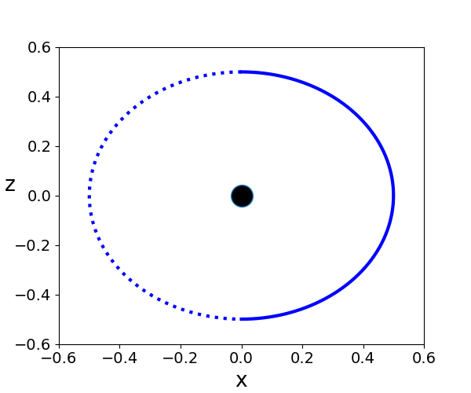
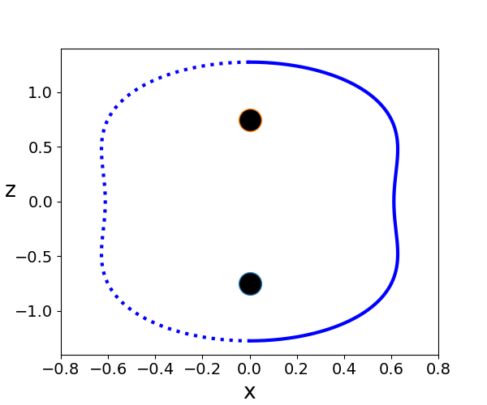
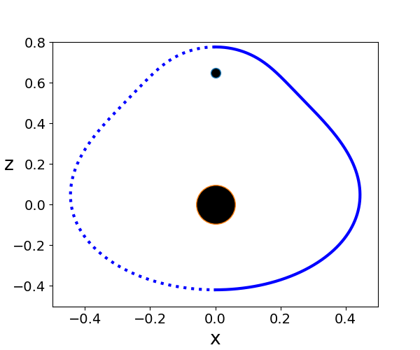

Finding Apparent Horizons
The apparent horizon equation is given by:
$$\Theta:=D_is^i+K_{ij}s^is^j-K=0$$
where \(s^i\) is the outward pointing normal vector and \(K_{ij}\) is the extrinsic curvature. If one assumes the ray body ansatz:
$$F(r,\theta,\phi)=r-h(\theta,\phi)$$
and a conformally flat metric:
$$\gamma_{ij}=\psi^4\begin{pmatrix}
1&0&0\\
0&r^2&0\\
0&0&r^2\sin^2{\theta}\\
\end{pmatrix}\:\:\:\:\:\:\:\:\:\:\:\:\gamma^{ij}=\psi^{-4}\begin{pmatrix}
1&0&0\\
0&r^{-2}&0\\
0&0&r^{-2}\sin^{-2}{\theta}\\
\end{pmatrix}$$
\(s_i\) and \(s^i\) can be written as:
$$s_i=C\psi^2\begin{pmatrix}
1\\
-h_\theta\\
-h_\phi\\
\end{pmatrix}\:\:\:\:\:\:\:\:\:\:\:\:s^i=C\psi^{-2}\begin{pmatrix}
1\\
-h_\theta/r^2\\
-h_\phi/(r^2\sin^2{\theta})\\
\end{pmatrix}\:\:\:\:\:\:\:\:\:\:\:\:C:=\frac{1}{\sqrt{1+h_\theta^2/r^2+h_\phi^2/(r^2\sin^2{\theta})}}$$
In the axi axisymmetric case \(h=h(\theta)\) this comes down to:
$$s_i=C\psi^2\begin{pmatrix}
1\\
-h_\theta\\
0\\
\end{pmatrix}\:\:\:\:\:\:\:\:\:\:\:\:s^i=C\psi^{-2}\begin{pmatrix}
1\\
-h_\theta/r^2\\
0\\
\end{pmatrix}\:\:\:\:\:\:\:\:\:\:\:\:C:=\frac{1}{\sqrt{1+h_\theta^2/r^2}}$$
The covariant derivative \(D_is^i\) in axi symmetry is then given by:
$$D_is^i=\frac{\partial}{\partial x^i}s^i+\Gamma_{di}^is^d=\frac{\partial}{\partial r}s^r+\Gamma_{dr}^rs^d+\frac{\partial}{\partial \theta}s^\theta+\Gamma_{d \theta}^\theta s^d$$
The important Christoffel symbols are:
$$\Gamma_{rr}^r=2\frac{\psi_r}{\psi}\:\:\:\:\:\:\:\:\:\Gamma_{\theta\theta}^\theta=\Gamma_{r\theta}^r=2\frac{\psi_\theta}{\psi}\:\:\:\:\:\:\:\:\:\Gamma_{r\phi}^\phi=\Gamma_{r\theta}^\theta=\frac{1}{r}+2\frac{\psi_r}{\psi}\:\:\:\:\:\:\:\:\:\Gamma_{\theta\phi}^\phi=\frac{\cos{\theta}}{\sin{\theta}}+2\frac{\psi_\theta}{\psi}$$
So one gets:
$$\Gamma_{di}^is^d=6C\psi^{-3}\psi_r-6\frac{h_\theta}{r^2}C\psi^{-3}\psi_\theta+\frac{2}{r}C\psi^{-2}-\frac{h_\theta}{r^2}C\psi^{-2}\frac{\cos{\theta}}{\sin{\theta}}$$
and
$$\frac{\partial}{\partial r}s^r=h_\theta^2/r^3C^3-2\psi^{-3}\psi_rC\:\:\:\:\:\:\:\:\:\frac{\partial}{\partial \theta}s^\theta=h_\theta^2/r^4\psi^{-2}C^3h_{\theta\theta}+2\psi^{-3}\psi_\theta Ch_\theta/r^2-\psi^{-2}Ch_{\theta\theta}/r^2$$
Putting this together and setting \(r=h\) one finds:
$$h_{\theta\theta}=\frac{\psi^2h^2}{C^3}(K_{ij}-K)+2h-\cot{\theta}/C^2h_\theta+\frac{4h^2}{\psi C^2}(\psi_r-\frac{h_\theta}{h^2}\psi_\theta)+3\frac{h_\theta^2}{h}$$
Note however that:
$$\cot{\theta}/C^2h_\theta (\theta=0=\pi)=0$$
The most common exampels for conformally flat metrics are Brill Lindquist metrics with conformal factor:
$$\psi=1+\frac{1}{2}\sum_{i=1}^N\frac{m_i}{\sqrt{r^2-2z_ir\cos{\theta}+z_i^2}}$$
Note that for that case one obtains \(K_{ij}=0\).
\(\:\)
The boundary conditions of the above equation are given by $$h_{\theta}(0)=h_{\theta}(\pi)=0$$ The Shooting method converts the boundary value problem into the following initaial value problem: $$\frac{d}{d\theta}\begin{pmatrix} h\\ h_\theta\\ \end{pmatrix}=\begin{pmatrix} h_\theta\\ 2h-\cot{\theta}/C^2h_\theta+\frac{4h^2}{\psi C^2}(\psi_r-\frac{h_\theta}{h^2}\psi_\theta)+3\frac{h_\theta^2}{h}\\ \end{pmatrix}$$ if one defines \(r_1=h\) and \(r_2=h_\theta\) the initial value problem can be written as: $$\frac{d}{d\theta}\begin{pmatrix} r_1\\ r_2\\ \end{pmatrix}=\begin{pmatrix} F_1(\theta,r_1,r_2)\\ F_2(\theta,r_1,r_2)\\ \end{pmatrix}$$ with initial values: $$r_1(0)=r_0\:\:\:\:\:\:\:\:\:\:\:\:r_2(0)=0$$ Note that \(r_0\) is our initial guess and has to be choosen such that \(r_2(\pi)=0\). This means one has to find the root of $$g(r_0):=r_2(\pi,r_0)$$ This can be done by many algorithms one would be the bisection method.

Figure 1:
left: Brill Lindquist black hole for \(N=1\), \(m_1=1\) and \(z_1=0\)
center: Brill Lindquist black hole for
\(N=2\), \(m_1=m_2=1\) and \(z_1=-z_2=0.75\)
right:Brill Lindquist black hole for \(N=2\), \(m_1=0.8,\:m_2=0.2\), \(z_1=0\) and \(z_2=0.65\)
"""
The code below was written by @author: https://github.com/DianaNtz and
solves the Apparent Horizon equation in axi symmetry for a time symmetric
conformally flat metric. The code is an implementation of the shooting
method which solves a boundary value problem by reducing it to an initial
value problem.
"""
import numpy as np
import matplotlib.pyplot as plt
#Brill-Lindquist
#one black hole
"""
def fpsi(theta,r,M):
return 1+M/(2*r)
def drfpsi(theta,r,M):
return -M/(2*r**2)
def dthetafpsi(theta,r,M):
return 0
"""
#two black holes with same mass
"""
def fpsi(theta,r,M):
value=1+0.5*M/np.sqrt(r**2+2*0.75*r*np.cos(theta)+(0.75)**2)
+0.5*M/np.sqrt(r**2-2*0.75*r*np.cos(theta)+(0.75)**2)
return value
def drfpsi(theta,r,M):
value=-0.5*M/np.sqrt(r**2+2*0.75*r*np.cos(theta)+(0.75)**2)**3*(r+0.75*np.cos(theta))
-0.5*M/np.sqrt(r**2-2*0.75*r*np.cos(theta)+(0.75)**2)**3*(r-0.75*np.cos(theta))
return value
def dthetafpsi(theta,r,M):
value=0.5*M/np.sqrt(r**2+2*0.75*r*np.cos(theta)+(0.75)**2)**3*(0.75*r*np.sin(theta))
-0.5*M/np.sqrt(r**2-2*0.75*r*np.cos(theta)+(0.75)**2)**3*(0.75*r*np.sin(theta))
return value
"""
#two black holes with different mass
def fpsi(theta,r,M):
value=1+0.5*M*0.8/np.sqrt(r**2+2*0*r*np.cos(theta)+(0)**2)
+0.5*M*0.2/np.sqrt(r**2-2*0.65*r*np.cos(theta)+(0.65)**2)
return value
def drfpsi(theta,r,M):
value= -0.5*M*0.8/np.sqrt(r**2+2*0*r*np.cos(theta)+(0)**2)**3*(r+0*np.cos(theta))
-0.5*M*0.2/np.sqrt(r**2-2*0.65*r*np.cos(theta)+(0.65)**2)**3*(r-0.65*np.cos(theta))
return value
def dthetafpsi(theta,r,M):
value=0.5*M*0.8/np.sqrt(r**2+2*0*r*np.cos(theta)+(0)**2)**3*(0*r*np.sin(theta))
+0.5*M*0.2/np.sqrt(r**2-2*0.65*r*np.cos(theta)+(0.65)**2)**3*(-0.65*r*np.sin(theta))
return value
def fr1(r1,r2,theta,M):
return r2
def fr2(r1,r2,theta,M):
if(np.abs(theta) < 10**(-8) or np.abs(theta-np.pi) < 10**(-8) ):
factor=0
else:
factor=r2*(1+(r2/r1)**2)*(np.cos(theta)/np.sin(theta))
value=2*r1-factor+4*r1**2*(1+(r2/r1)**2)/fpsi(theta,r1,M)*(drfpsi(theta,r1,M)
-(1/r1**2)*r2*dthetafpsi(theta,r1,M))+3*r2**2/r1
if(np.abs(r1) > 1.2182772912493089e+14 or np.abs(r1) < 10**(-8)):
return 0
else:
return value
#integration method
def shooting(r0,M):
ntheta=600
r10=r0
r20=0
theta0=0
thetafinal=np.pi
dtheta=(thetafinal-theta0)/(ntheta-1)
theta=np.zeros(ntheta)
r1=np.zeros(ntheta)
r2=np.zeros(ntheta)
thetan=theta0
r1n=r10
r2n=r20
for j in range(0,ntheta):
theta[j]=thetan
r1[j]=r1n
r2[j]=r2n
k1r1=dtheta*fr1(r1n,r2n,thetan,M)
k1r2=dtheta*fr2(r1n,r2n,thetan,M)
k2r1=dtheta*fr1(r1n+0.5*k1r1,r2n+0.5*k1r2,thetan+0.5*dtheta,M)
k2r2=dtheta*fr2(r1n+0.5*k1r1,r2n+0.5*k1r2,thetan+0.5*dtheta,M)
r1n=r1n+k2r1
r2n=r2n+k2r2
thetan=thetan+dtheta
return theta,r1,r2[-1]
#bisection method
def find(ra1,ra2,M):
i=0
tol=0.00001
N=100
while(i < N):
theta1,r1,value1=shooting(ra1,M)
if(np.abs(value1) < tol):
print(ra1)
return theta1,r1
theta2,r2,value2=shooting(ra2,M)
if(np.abs(value2) < tol):
print(ra2)
return theta2,r2
if(value1*value2 < tol):
ra3=(ra1+ra2)/2
theta3,r3,value3=shooting(ra3,M)
if(np.abs(value3) < tol):
print(ra3)
return theta3,r3
if(value1*value3 < 0):
ra2=ra3
if(value2*value3 < 0):
ra1=ra3
else:
print("try other initial values for your search!")
return theta1*0,r1*0
i=i+1
print("Reached maximum number of iterations N={0:.0f}!".format(N))
theta1,r1,value1=shooting(ra1,M)
return theta1*0,r1*0
#theta,r=find(0.505,0.495,1) #one black hole
#theta,r=find(1.27,1.28,1) #two black holes with same mass
theta,r=find(0.775588,0.776,1) #two black holes with different mass
fig, ax = plt.subplots(figsize=(6,5))
ax.plot(r*np.sin(theta),r*np.cos(theta),"-",linewidth=3.0,color='blue')
ax.plot(-r*np.sin(theta),r*np.cos(theta),":",linewidth=3.0,color='blue')
#one black hole
#plt.plot(0, 0, marker="o", markersize=20, markerfacecolor="k")
#ax.set_xlim(-0.6,0.6)
#ax.set_ylim(-0.6,0.6)
#two black holes with same mass
#plt.plot(0, -0.75, marker="o", markersize=20, markerfacecolor="k")
#plt.plot(0, 0.75, marker="o", markersize=20, markerfacecolor="k")
#ax.set_xlim(-0.8,0.8)
#ax.set_ylim(-1.4,1.4)
#two black holes with different mass
plt.plot(0, 0.65, marker="o", markersize=10, markerfacecolor="k")
plt.plot(0, 0, marker="o", markersize=40, markerfacecolor="k")
ax.set_xlim(-0.5,0.5)
ax.set_ylim(-0.5,0.8)
plt.xlabel("x",fontsize=19)
plt.ylabel(r'z',fontsize=19,rotation=0)
plt.xticks(fontsize= 14)
plt.yticks(fontsize= 14)
plt.savefig('figures/2blackholesdifferent.png',dpi=100)
plt.show()Consider an elliptic operator \(L\) such that: $$L(u)=0$$ the flow method rewrites this elliptic PDE into the following hyperbolic equation: $$\frac{\partial u}{\partial \lambda}=-L(u)$$ since the expansion \(\Theta\) is such an elliptic operator one finds for the apparent horizon equation: $$\partial_\lambda x^i=-\Theta s^i$$ with: $$x^i=\begin{pmatrix} h(\theta ,\phi)\sin{\theta}\cos{\phi}\\ h(\theta , \phi)\sin{\theta}\sin{\phi}\\ h(\theta ,\phi)\cos{\theta} \end{pmatrix}$$


Figure 2:
left: Brill Lindquist black hole for \(N=1\), \(m_1=1\) and \(z_1=0\)
center: Brill Lindquist black hole for
\(N=2\), \(m_1=m_2=1\) and \(z_1=-z_2=0.75\)
right:Brill Lindquist black hole for \(N=2\), \(m_1=0.8,\:m_2=0.2\), \(z_1=0\) and \(z_2=0.65\)
"""
The code below was written by @author: https://github.com/DianaNtz and
solves the Apparent Horizon equation in axi symmetry for a time symmetric
conformally flat metric. The code is an implementation of the flow
method which solves an elliptic PDE by transforming it into a hyperbolic equation.
"""
import numpy as np
import matplotlib.pyplot as plt
import imageio
import os
filenames = []
n=100
def d2theta(D,theta):
dtheta=theta[1]-theta[0]
Dxx=np.zeros((n), dtype='double')
for j in range(0,n):
if(j!=0 and j!=n-1):
Dxx[j]=(D[j+1]-2*D[j]+D[j-1])/(dtheta**2)
Dxx[0]=(D[1]-2*D[0]+D[n-1])/(dtheta**2)
Dxx[n-1]=(D[0]-2*D[n-1]+D[n-2])/(dtheta**2)
return Dxx
def d1theta(D,theta):
dtheta=theta[1]-theta[0]
Dx=np.zeros((n), dtype='double')
for j in range(0,n):
if(j!=0 and j!=n-1):
Dx[j]=(D[j+1]-D[j-1])/(2*dtheta)
return Dx
#initial guess surface
theta0=0.000001
thetafinal=np.pi-0.000001
dtheta=(thetafinal-theta0)/(n-1)
theta=np.linspace(theta0,thetafinal,n)
h=0.5*theta**2+2
#Brill-Lindquist
M=1
s=0.75
#one black hole
"""
def fpsi(theta,h,M):
return 1+M/(2*h)
def drfpsi(theta,h,M):
return -M/(2*h**2)
def dthetafpsi(theta,h,M):
return 0
"""
#two black holes with same mass
"""
def fpsi(theta,r,M):
value=1+0.5*M/np.sqrt(r**2+2*s*r*np.cos(theta)+(s)**2)
+0.5*M/np.sqrt(r**2-2*s*r*np.cos(theta)+(s)**2)
return value
def drfpsi(theta,r,M):
value=-0.5*M/np.sqrt(r**2+2*s*r*np.cos(theta)+(s)**2)**3*(r+s*np.cos(theta))
-0.5*M/np.sqrt(r**2-2*s*r*np.cos(theta)+(s)**2)**3*(r-s*np.cos(theta))
return value
def dthetafpsi(theta,r,M):
value=0.5*M/np.sqrt(r**2+2*s*r*np.cos(theta)+(s)**2)**3*(s*r*np.sin(theta))
-0.5*M/np.sqrt(r**2-2*s*r*np.cos(theta)+(s)**2)**3*(s*r*np.sin(theta))
return value
"""
#two black holes with different mass
def fpsi(theta,r,M):
value=1+0.5*M*0.8/np.sqrt(r**2+2*0*r*np.cos(theta)+(0)**2)
+0.5*M*0.2/np.sqrt(r**2-2*0.65*r*np.cos(theta)+(0.65)**2)
return value
def drfpsi(theta,r,M):
value=-0.5*M*0.8/np.sqrt(r**2+2*0*r*np.cos(theta)+(0)**2)**3*(r+0*np.cos(theta))
-0.5*M*0.2/np.sqrt(r**2-2*0.65*r*np.cos(theta)+(0.65)**2)**3*(r-0.65*np.cos(theta))
return value
def dthetafpsi(theta,r,M):
value=0.5*M*0.8/np.sqrt(r**2+2*0*r*np.cos(theta)+(0)**2)**3*(0*r*np.sin(theta))
+0.5*M*0.2/np.sqrt(r**2-2*0.65*r*np.cos(theta)+(0.65)**2)**3*(-0.65*r*np.sin(theta))
return value
#expansion THETA
def THETA(h,theta):
d1=d1theta(h,theta)
d2=d2theta(h,theta)
Fpsi=fpsi(theta,h,M)
C=1/np.sqrt(1+d1**2/h**2)
T=C**3/(Fpsi**2*h**2)*(-d2+2*h-d1*(1+(d1/h)**2)*(np.cos(theta)/np.sin(theta))
+4*h**2*(1+(d1/h)**2)/Fpsi*(drfpsi(theta,h,M)
-(1/h**2)*d1*dthetafpsi(theta,h,M))+3*d1**2/h)
return -T*C*Fpsi**(-2)
#integration method
dlambda=0.025*dtheta
for k in range(0,60000*4+1):
k1=dlambda*THETA(h,theta)
h=h+k1
if(k%1500==0):
print(k)
phi = np.linspace(0, 2.0*np.pi, 200)
T,P=np.meshgrid(theta, phi)
fig = plt.figure(figsize=(10,10))
ax = fig.add_subplot(projection='3d')
ax.plot_surface(h*np.sin(T)*np.cos(P),h*np.sin(T)*np.sin(P),
h*np.cos(T), rstride=1, cstride=1,cmap='seismic')
ax.view_init(30,90)
filename ='bla{0:.0f}.png'.format(int(k/1500))
#append file name to the list filename
filenames.append(filename)
#save the plot
plt.savefig(filename,dpi=100)
plt.close()
#plt.show()
#build the gif
with imageio.get_writer('figures/twoblackholesdifferentmass.gif', mode='I') as writer:
for filename in filenames:
image = imageio.imread(filename)
writer.append_data(image)
#remove saved figures
for filename in set(filenames):
os.remove(filename)
phi = np.linspace(0, 2.0*np.pi, 200)
T,P=np.meshgrid(theta, phi)
fig = plt.figure(figsize=(10,10))
ax = fig.add_subplot(projection='3d')
ax.plot_surface(h*np.sin(T)*np.cos(P),h*np.sin(T)*np.sin(P),h*np.cos(T),
rstride=1, cstride=1,cmap='seismic')
ax.view_init(30,90)
plt.show()